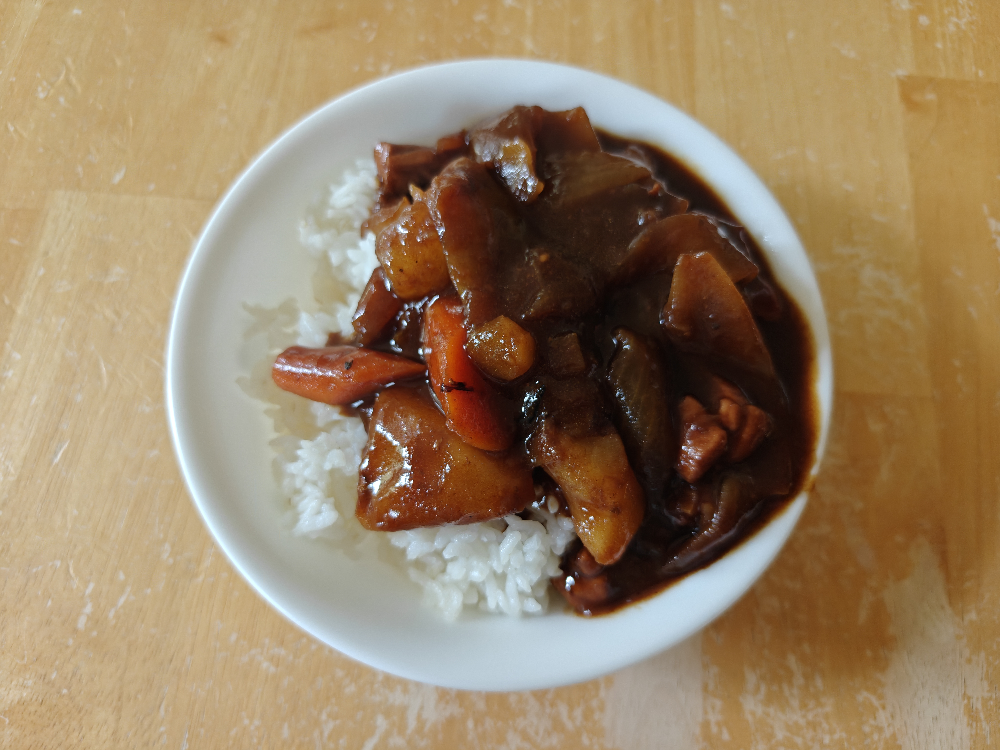

Japanese Chicken Curry

Description
Rich Japanese-style chicken curry with vegetables.
Ingredients
- 2-3 chicken thighs
- 1 large russet potato
- 2 medium carrots
- 1 onion
- curry block (half (4 cubes) of an 8-cube rectangular package)
- Java Curry (rich dark flavor)
- Golden (neutral base)
- Vermont (sweeter)
- Kokumaro (sweeter, velvety texture)
- seasonings to taste
- sweet: oyster sauce, mirin, sugar
- savory: dashi, soy sauce, salt
- bitter/depth: chocolate, cacao powder, coffee powder
- richness: peanut butter
- other: black/white/red pepper, garlic, ginger, cumin, shaoxing wine
- corn starch / flour (for thickening)
- peel and cut potato and carrot into bite-size chunks
- soak potato in bowl of water to remove starch (if desired)
- peel and cut onion into slices
- cut chicken into bite sized pieces
- preheat oil, stir fry onions in pot until golden brown and well softened
- put chicken into pot, add some soy sauce, black pepper, shaoxing wine, continue stir frying until chicken is mostly cooked
- put carrot and potato into pot, add water until barely covering ingredients
- cover and heat until rolling boil
- reduce heat to low-medium (simmering), add preferred seasonings and mix well
- cover and simmer, stirring occasionally, until you can poke through potato/carrot with a chopstick
- turn off heat, mix in curry blocks until dissolved
- if it's not thick enough, you can boil it a bit more or mix in a cornstarch/flour slurry
- serve over rice
Back